NarRTOS Drive
Araçlara takılan bir takip cihazının yazılımı. Aracın nerede olduğunu, motorunun ne yaptığını ve kontağın açık mı kapalı mı olduğunu düzenli olarak merkezî bir sunucuya bildirir. Şebeke çekmeyen yerlerde veriyi kaybetmez; kendi belleğine yazar ve bağlantı gelince gönderir.
Bu belge cihazın nasıl çalıştığını ve neden böyle çalıştığını anlatıyor. Konuyu hiç bilmeyen biri de baştan okuyarak takip edebilir; teknik terimler ilk geçtikleri yerde açıklanıyor, tam liste sonda Sözlük'te.
Bu cihaz ne yapıyor?
Bir nakliye şirketi düşünün. Yüz kamyonu var ve şu soruların cevabını sürekli bilmek istiyor:
- Hangi kamyon şu an nerede?
- Hangi sürücü ne zaman işe başladı, ne zaman bitirdi?
- Hangi araç boşta rölantide bekleyip yakıt yakıyor?
- Motorda arıza var mı?
Bu cihaz her aracın içine takılıyor ve bu soruların cevabını toplayıp merkeze gönderiyor. Merkezdeki yazılım (buna filo sistemi diyoruz) verileri bir haritada ve raporlarda gösteriyor.
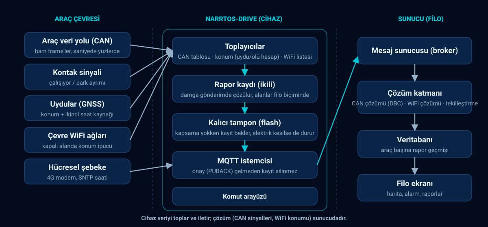
Cihaz veriyi nereden alıyor?
| Kaynak | Ne öğreniyor |
|---|---|
| Uydu alıcısı (GNSS) | Konum, hız, gidiş yönü |
| Aracın kendi veri yolu (CAN) | Motor devri, yakıt, kilometre, arıza kodları. Aracın kendi bilgisayarlarının konuştuğu hat |
| Kontak kablosu | Araç çalışıyor mu, park hâlinde mi |
| Hücresel modem | Veriyi merkeze göndermek için (telefon gibi SIM kartı var) |
Bir günün öyküsü
Cihazın sıradan bir iş gününde yaptıklarını sırayla izleyelim. Belgedeki bütün teknik ayrıntılar bu akışın bir parçasını anlatıyor:
| Saat | Olan | Cihaz ne yapıyor |
|---|---|---|
| 07:00 | Sürücü kontağı açıyor | Kontak değişimini anında bildiriyor, çünkü mesai başlangıcı raporu buna dayanıyor |
| 07:01 | Araç kapalı otoparkta | Uydu ve şebeke yok. Veri toplamaya devam edip kendi belleğine yazıyor |
| 07:20 | Açık havaya çıkıyor | Uydu ve şebeke geliyor. Biriken 20 dakikalık veri, üretildiği saatlerin damgasıyla gönderiliyor |
| 09:30 | Tünelden geçiyor | Şebeke kesiliyor, veri yine belleğe yazılıyor; tünel çıkışında gönderiliyor |
| 12:00 | Mola, kontak kapalı | Rapor sıklığı dakikada birden 10 dakikada bire düşüyor, boşa veri harcamamak için |
| 18:00 | Araç garajda, kontak kapalı | Yazılım güncellemesi varsa şimdi kuruluyor. Yol ortasında yapılmıyor |
Üç şey: şebeke yokken veri kaybetmiyor, saatini bilmese bile doğru zaman damgası üretiyor, ve bozuk bir güncelleme kendini geri alıyor. Üçünün de sebebi aynı: cihaz aracın altında ve kimse ona gidip müdahale edemiyor.
Araç verisini sunucu çözüyor
Cihaz aracın hattından okuduğu veriyi işlemeden iletiyor. Anlamlandırma merkezde yapılıyor, böylece yeni bir sinyal eklenince araçlara gitmek gerekmiyor.
Şebeke yokken veri kaybolmuyor
Tünelde, kapalı otoparkta, kırsalda üretilen raporlar cihazın belleğine yazılıyor ve bağlantı dönünce sırayla gönderiliyor.
Güncelleme geri alınabiliyor
Açılışta çöken bir yazılım kendiliğinden eski sürüme dönüyor. Aracın altındaki cihaza kimse gidip müdahale edemez.
Ekransız ama sorgulanabilir
Kablo, uzaktan mesaj ve tek bir LED. Üç kanal, üçü de "neden çalışmıyor" sorusunu cevaplamak için.
Temel kavramlar
Belgenin geri kalanını takip etmek için gereken sekiz kavram. Tam liste sonda Sözlük'te.
| Kavram | Ne demek |
|---|---|
| CAN hattı | Aracın içindeki bilgisayarların birbiriyle konuştuğu iki telli kablo. Motor, fren, gösterge paneli hepsi buradan haberleşiyor. Cihaz bu konuşmayı dinliyor. |
| Frame | CAN hattında geçen tek bir mesaj. Bir kimlik numarası ve en çok 8 bayt veri taşıyor. Saniyede binlercesi geçiyor. |
| Sabitleme (fix) | Uydu alıcısının yeterli uyduyu görüp konumu hesaplayabilmiş olması. Sabitleme yoksa konum üretilemez. |
| Kapsama | Hücresel şebekenin çektiği yer. "Kapsama dışı" = telefonun çekmediği yer. |
| Tampon | Gönderilemeyen raporların geçici olarak biriktirildiği bellek alanı. Bu cihazda kalıcı bellekte, yani elektrik kesilse bile duruyor. |
| Zaman damgası | Her raporun "ben şu saatte üretildim" bilgisi. Filo sisteminin bütün raporları buna dayanıyor. |
| Filo sistemi | Merkezdeki yazılım. Cihazlardan gelen verileri saklıyor, haritada gösteriyor, rapor üretiyor. |
| Firmware | Cihazın içindeki yazılım. Bilgisayardaki işletim sistemi gibi; güncellenebiliyor. |
Hızlı başlangıç
Cihazı ilk kez eline alan biri için 15 dakikalık yol haritası. Her adımın sonunda ne görmen gerektiği yazıyor; ayrıntılar ve sorun çözümleri bir sonraki bölümde.
- Hazırlık. Gereken üç şey: bir bilgisayar, bir USB kablosu ve ESP32-S3 kartı. Kartı USB ile bilgisayara tak.
- Derleme aracını kur (bir kez yapılır): terminale
pip install platformioyaz. - Kodu indir ve yükle:
git clone https://github.com/corezzle/NarRTOS-Drive
cd NarRTOS-Drive
pio run -e esp32s3_drive -t uploadİlk seferde birkaç dakika sürer; sonunda SUCCESS yazısını görmelisin.
- Cihazla konuş:
pio device monitoryaz. Cihazın açılış mesajları akar ve en sonda şunu görürsün: "seri porttan 'help' yazarak komut listesini görebilirsiniz". - Dene:
helpyaz, komut listesi gelsin. Sonrainfoyaz; sürüm ve durum bilgisi gelsin. Bu iki komut çalışıyorsa kurulum tamamdır. - Ayarla ve ilk raporu üret: bir sonraki bölümdeki "İlk ayarlar" adımlarını izle.
Başlarken
Kısaca: bu bölüm, Hızlı başlangıç'taki adımların açıklamalı hâli. Hiç gömülü cihaz kurmamış biri buradan adım adım ilerleyebilir: neyi neden kurduğun, her adımda ne görmen gerektiği ve bir şey ters giderse ne yapacağın yazıyor.
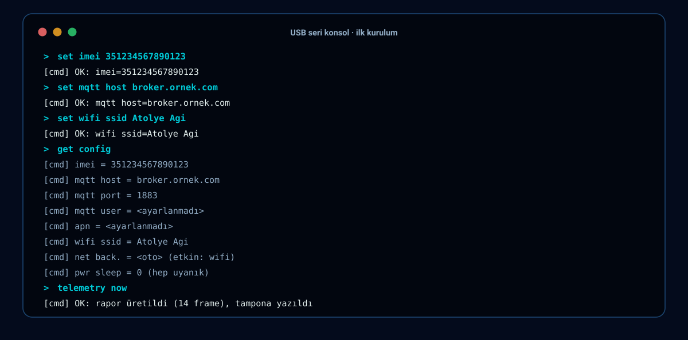
Önce tek bir şeyi kafana yerleştir: cihazın ekranı yok. Onunla konuşmanın tek yolu, USB kablosuyla bağlanıp klavyeden metin komutları yazmak. Telefon kurar gibi dokunarak değil, kısa komutlar yazarak ilerleyeceksin ve cihaz her komuta yazıyla cevap verecek.
Adım 1: Bilgisayarı hazırla
İki şey kurulacak, ikisi de bir kez:
- PlatformIO: gömülü yazılımları derleyip karta yükleyen araç. Terminale şunu yaz:
pip install platformioBilgisayarında Python yoksa önce python.org'dan kur; PlatformIO gereken her şeyi kendisi indirir.
- USB-seri sürücüsü: bazı kartlar bilgisayara özel bir sürücüyle tanıtılır (karttaki köprü yongasına göre, ör. CH34x). Kartı taktığında bilgisayar görmezse bu sürücüyü kurup kabloyu çıkarıp tak.
Adım 2: Kodu indir, derle, karta yükle
# 1. Kodu indir
git clone https://github.com/corezzle/NarRTOS-Drive
cd NarRTOS-Drive
# 2. Kart USB'de takılıyken derle ve yükle
pio run -e esp32s3_drive -t uploadNe göreceksin: ilk derleme birkaç dakika sürer (derleyiciler iniyor), ekrandan yüzlerce satır akar. Sonunda yeşil SUCCESS ve yükleme yüzdeleri görünür. Sonraki derlemeler saniyeler sürer.
Üç şüpheli var, sırayla dene: kablo (bazı USB kablolar yalnız şarj içindir, veri taşımaz), sürücü (Adım 1'deki USB-seri sürücüsü) ve port (kartı farklı bir USB girişine tak). Kart görünüyor ama yükleme başlamıyorsa karttaki BOOT tuşuna basılı tutup tekrar dene.
Adım 3: Cihazla ilk konuşma
pio device monitorBu komut cihazın konsoluna bağlanır. Kart her açılışta neler yaptığını satır satır yazar; en sonda şu satırı görürsün:
seri porttan 'help' yazarak komut listesini görebilirsinizŞimdi help yazıp Enter'a bas: bütün komutların listesi gelir. info yaz: sürüm, çalışma süresi ve bellek bilgisi gelir. Bu ikisi çalışıyorsa cihazla konuşabiliyorsun demektir.
Adım 4: İlk ayarlar
Cihaz fabrikadan "boş" gelir: kim olduğunu, hangi sunucuya rapor göndereceğini ve hangi ağı kullanacağını bilmez. Bunları tek tek söylüyorsun. Aşağıdakileri kendi bilgilerinle yaz; her komuttan sonra cihaz OK ile cevap verir:
set imei 351234567890123 # cihazın kimlik numarası (modem takılıysa gerekmez)
set apn internet # SIM operatörünün veri ağı adı
set mqtt host broker.ornek.com # raporların gideceği sunucu
set mqtt port 1883
set wifi ssid Atolye Agi # atölyede test için WiFi adı
set wifi pass sifre123 # WiFi şifresi
get config # yazdıklarını kontrol et| Ayar | Ne işe yarıyor | Nereden bulunur |
|---|---|---|
imei | Cihazın filo sistemindeki kimliği | Modem takılıysa cihaz kendisi okur, yazmana gerek kalmaz |
apn | SIM kartın veri ağına giriş adı | SIM operatöründen (çoğu operatörde "internet") |
mqtt host / port | Raporların gideceği sunucu | Sunucu ekibinden |
wifi ssid / pass | Atölyede, modem yokken test bağlantısı | Atölyenin WiFi bilgileri |
get config çıktısında şifreler yerine <ayarlı> yazar. Sebebi: konsol çıktısı loglara, ekran görüntülerine ve destek yazışmalarına düşüyor.
SIM ya da WiFi bilgisi girilmemişse cihaz ağ donanımını hiç açmıyor; kurulum masasında bekleyen cihaz boşuna elektrik harcamasın diye. net status bu durumu "ayarsız" diye bildirir.
Adım 5: Çalıştığını gör
Sırayla şu üç komutu yaz ve yanlarındaki sonucu bekle:
| Komut | Görmen gereken | Görmüyorsan |
|---|---|---|
net status | çevrimiçi | WiFi/SIM ayarlarını get config ile kontrol et |
telemetry now | OK: rapor üretildi | Çıktıdaki hata satırını oku, ne eksikse onu söyler |
sf peek | Gidecek raporun içeriği (JSON) | "saat henüz yok" görmen normaldir: saat öğrenilince kendiliğinden gönderilir |
Bu üçü tamamsa zincir uçtan uca çalışıyor: veri toplanıyor, rapor üretiliyor, gönderilmeye hazır. Cihaz bundan sonra kendi kendine çalışır; kontak açıkken dakikada bir, park hâlinde 10 dakikada bir rapor üretir.
Cihaz açılışta ne yapıyor?
Merak edersen: cihaz elektrik verildiğinde parçalarını belirli bir sırayla başlatır ve her adımı konsola yazar. Sıra keyfi değil: ayarlar en önce (her şey onları okuyor), komut arayüzü hemen ardından (yanlış ayarlı cihaza müdahalenin tek yolu), sonra veri toplayıcılar, tampon, ağ, saat, konum, rapor üretici, güncelleme ve durum LED'i.
Geliştirici notları
Aynı kaynak kod iki kart için derlenebiliyor:
| Ortam adı | Kart | Notlar |
|---|---|---|
esp32s3_drive | ESP32-S3 + 8 MB bellek | Asıl hedef. Ekran olmadığı için ek bellek yongası (PSRAM) yok |
esp32s3_drive_lcd128 | Corezzle Touch-LCD-1.28 | Geliştirme/test kartı: 16 MB bellek. Ekranına dokunulmuyor, siyah kalıyor |
Cihazın CAN, uydu ve modem donanımı henüz elimizde yok; ilgili kod parçaları özellik anahtarlarıyla derleme dışında tutulabiliyor. Önemli olan şu: servisler donanımdan bağımsız yazıldı, donanım olmasa bile komutlarla veri beslenip test edilebiliyorlar.
| Anahtar | Varsayılan | Kapalıyken |
|---|---|---|
ENABLE_CAN | kapalı | Araç verisi can inject komutuyla elle beslenir |
ENABLE_GNSS | kapalı | Konum gnss inject komutuyla elle beslenir |
ENABLE_WIFI | açık | geçerli değil |
ENABLE_MQTT | açık | Raporlar tamponda birikir, gönderilmez |
ENABLE_MODEM | kapalı | Modem seçilemez |
Bir anahtarı yanlışlıkla açan kişi sessizce çalışmayan bir cihaz almasın diye, ilgili dosyada derlemeyi durduran bir kontrol var.
Nasıl kurgulandı
Kısaca: yazılım dört katmana ayrılmış. En üstte iş yapan servisler, altında donanım sürücüleri. Aralarında bir katman daha var ve projenin en özgün yanı o: donanım bilmeyen saf modüller. Bunlar geliştirme bilgisayarında test edilebiliyor, yani cihaz elimizde olmadan doğrulanabiliyorlar.
Katmanlar
+--------------------------------------------------------------+
| SERVİSLER rapor üretimi, gönderim, ağ, konum, saat, |
| güncelleme, tampon, komut arayüzü |
+--------------------------------------------------------------+
| SAF MODÜLLER veri biçimlendirici, uydu cümlesi çözücü, |
| (bilgisayarda güncelleme bildirimi çözücü, modem yanıtı |
| test edilir) çözücü |
+--------------------------------------------------------------+
| SÜRÜCÜLER CAN, uydu alıcısı UART'ı, modem/WiFi, |
| kalıcı bellek erişimi |
+--------------------------------------------------------------+
| ÇEKİRDEK ayar deposu, merkezî yapılandırma |
+--------------------------------------------------------------+Ailenin ilk ürünü olan Wear'da bir uygulama katmanı vardı (saat kadranı, ayarlar menüsü, galeri…). Drive'da yok, çünkü kullanıcı yok. Onun yerini saf modül katmanı aldı.
Verinin yolu
Üç kaynaktan gelen veri tek bir rapora dönüşüyor, kalıcı belleğe yazılıyor, sonra gönderiliyor:
CAN hattı uydu alıcısı kontak kablosu
| | |
v v v
96 sinyallik taze sabitleme rapor zamanlayıcı
tablo (10 sn'den eski (kontak açık: 1 dk
olan kullanılmaz) park: 10 dk)
| | |
+---------+---------+---------+---------+
|
v
+-------------------------+
| RAPOR | sıkıştırılmış ikili
| en çok 933 bayt | biçim. Okunabilir
| | metne SONRA çevrilir
+-------------------------+
|
v
+-------------------------+
| KALICI BELLEK | 624 rapor sığıyor
| (tampon) | elektrik kesilse
+-------------------------+ bile kaybolmuyor
|
v
+-------------------------+
| METNE ÇEVİR | zaman damgası
| | burada hesaplanıyor
+-------------------------+
|
v
şebeke üzerinden
GÖNDER
|
v
==== SUNUCU ====
|
+-----------+-----------+
| |
v v
araç verisini çöz, "aldım" onayı
veritabanına yaz geri döner
|
v
rapor bellekten silinir
(ancak ŞİMDİ)1. Her rapor tampondan geçiyor, şebeke varken bile. Sebebi: yalnızca arıza anında kullanılan bir yol, ihtiyaç duyulduğunda bozuk çıkan yoldur. Her rapor aynı yoldan geçince o yol sürekli sınanıyor.
2. Rapor, sunucu "aldım" demeden silinmiyor. Gönderdikten hemen sonra silseydik, tam o anda kopan bir bağlantı raporu hem göndermemiş hem silmiş olurdu.
İşlerin paylaşımı
Cihazın işlemcisi iki çekirdekli. İşler ikisine dağıtılmış:
| İş | Çekirdek | Öncelik |
|---|---|---|
| CAN dinleme | 1 | en yüksek |
| Ağ bağlantısı | 0 | yüksek |
| Rapor üretimi, gönderim, konum | 0 | orta |
| Komut arayüzü | 0 | orta |
| Güncelleme, durum LED'i | 0 | en düşük |
CAN dinleme ayrı çekirdekte ve en yüksek öncelikte, çünkü hattan saniyede binlerce mesaj geçiyor. Modem ya da gönderim işi 20 saniye takılsa bile araç verisi kaçmıyor.
Bellek bölümleri
Cihazın 8 MB'lık kalıcı belleği parçalara ayrılmış:
ayarlar 20 KB IMEI, sunucu adresi, SIM ayarı
yazılım A 2,8 MB çalışan firmware
yazılım B 2,8 MB güncelleme buraya yazılıyor
tampon 2,4 MB gönderilemeyen raporlar (624 rapor)İki yazılım bölümü olmasının sebebi güvenlik. Güncelleme boştaki bölüme yazılıyor; başarılıysa cihaz ona geçiyor. Yarıda kalan bir güncelleme çalışan yazılıma dokunmadığı için cihaz bozulmuyor.
Tampon yazılım bölümlerinin dışında duruyor. Yani güncelleme, bekleyen raporları silmiyor.
Ailenin diğer ürünüyle ilişkisi
Drive, NarRTOS ürün ailesinin ikinci ürünü. Birincisi NarRTOS Wear: dokunmatik ekranlı, kol saati benzeri bir cihaz. İkisi aynı geliştirme disiplinini paylaşıyor ama ayrı kod depoları, ayrı sürüm numaraları, ayrı yazılım.
Neyi paylaşıyorlar, neyi paylaşmıyorlar
| Konu | Wear (saat) | Drive (araç) |
|---|---|---|
| Kullanıcı arayüzü | Dokunmatik ekran, 12 uygulama | yok. Ekran, buton, ses hiçbiri yok |
| İnternet bağlantısı | WiFi | Hücresel modem (WiFi yalnız atölyede) |
| Konum | Çevredeki WiFi ağlarından tahmin (±19 m) | Uydu. Hareket eden araçta WiFi yöntemi işlemiyor |
| Şebeke yokken | Rapor atlanıyor | Belleğe yazılıyor, sonra gönderiliyor |
| Bozuk güncelleme | Kullanıcı cihazı USB'ye takıp kurtarıyor | Kendiliğinden geri alınıyor, çünkü kimse ulaşamıyor |
| Güncelleme zamanı | Gece, kullanıcı uyurken | Araç park hâlindeyken |
| Cihaz kimliği | Ağ kartı adresi | IMEI. Filo sistemi bunu kullanıyor |
| Sorun teşhisi | Ekrandaki ayarlar menüsü | Kablo, uzaktan mesaj, tek LED |
| Saat kaynağı | İnternet + saat yongası | İnternet + uydu + modem (saat yongası yok) |
Ortak kod: henüz yok, sebebi var
Doğal soru: "İki ürün bu kadar benzer disiplin paylaşıyorsa neden kodu ortaklaştırmadınız?"
Her aşama sonunda bu yeniden değerlendirildi. Sonuç: kod paylaşılmıyor, kalıp paylaşılıyor.
En güçlü aday kablosuz güncelleme kodu oldu. Wear'ın ilgili dosyası 710 satır; gerçekten ortak olabilecek çekirdek ~150 satır. Geri kalanı ürüne özgü: güncelleme ne zaman tetiklenir, ne zaman kurulur, bozuksa ne olur, cihaz nasıl tanınır. Hepsi farklı.
İki ayrı depoya paylaşılan bir bileşen koymak ek altyapı istiyor: sürüm takibi, eşgüdümlü değişiklik, ayrı test kurulumu. 150 satır iyi anlaşılmış kod için bu maliyet kendini karşılamıyor.
Ailede dört ürün planlanıyor. İki ürün kopyayı taşıyabilir, dört ürün taşıyamaz. Üçüncü ürün başladığında aynı kod üçüncü kez yazılacak. Asıl tetikleyici o an olacak. Üstelik o noktada hangi kodun gerçekten sabit kaldığı iki ürünlük deneyimle görülmüş olacak.
Bu arada ortaklaştırma cihazda değil sunucuda yapıldı: güncelleme bildirimi biçimi Wear ile birebir aynı tutuldu, böylece tek bir sunucu iki ürünü de besleyebiliyor.
Donanım ve bağlantılar
Drive'ın kendi elektronik kartı henüz üretilmedi. Aşağıdaki bacak numaraları geliştirme kartında çakışmayan pinlerden seçildi. Gerçek kart gelince tek dosyadan düzeltilecek; kodun geri kalanı değişmeyecek.
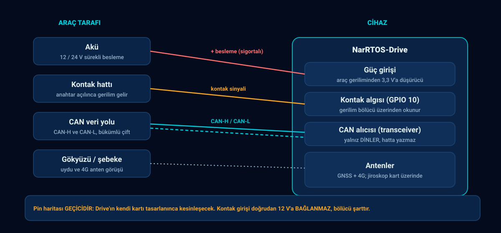
Bağlantı noktaları
"GPIO" işlemcinin dışa açılan bacaklarına verilen ad; her biri numaralı.
| İşlev | GPIO | Yön | Not |
|---|---|---|---|
| CAN veri çıkışı | 4 | çıkış | Ara yongaya bağlanır (cihaz hatta yazmasa da pin bağlanır) |
| CAN veri girişi | 5 | giriş | Ara yongadan gelir |
| CAN uyku hattı | yok | yok | Kullanılmıyor |
| Uydu alıcısı girişi | 8 | giriş | Konum verisi buradan gelir |
| Uydu alıcısı çıkışı | 9 | çıkış | Kullanılmıyor. Alıcıya komut gönderilmiyor |
| Modem çıkışı | 17 | çıkış | Modemin giriş bacağına |
| Modem girişi | 18 | giriş | Modemin çıkış bacağından |
| Modem güç düğmesi | 15 | çıkış | Modemi açmak için 1,2 saniyelik darbe |
| Kontak girişi | 10 | giriş | Aracın kontak hattından, gerilim düşürücü üzerinden |
| Durum LED'i | 48 | çıkış | Bağlanmazsa servis hiç çalışmıyor |
Seri hatların dağılımı
İşlemcinin üç seri haberleşme birimi var; her biri bir iş için ayrılmış:
| Birim | Kullanım | Hız |
|---|---|---|
| UART0 | Bilgisayar bağlantısı ve komutlar | 115200 |
| UART1 | Uydu alıcısı | 9600 (ayarlanabilir) |
| UART2 | Modem | 115200 |
İşlemcinin içinde CAN denetleyicisi var ama elektriksel arayüzü yok. Bacakları doğrudan aracın CAN kablosuna bağlamak ne işe yarar ne de güvenlidir. Hem hattı bozar hem işlemciyi. Arada bir transceiver (SN65HVD230, TJA1050 gibi) olmak zorunda; hat uçlarında da 120 ohm'luk sonlandırma direnci.
Kontak girişi
Araç kontağı 12 volt, işlemcinin girişi 3,3 volt. Arada gerilim düşürücü ve koruma devresi şart.
Kontak bilgisi üç yerde kullanılıyor: rapor sıklığı (açıkken dakikada bir, park hâlinde 10 dakikada bir), anında rapor (kontak değişince beklemeden), ve güncelleme zamanı (yalnız park hâlindeyken). Bu kablo bağlanmazsa cihaz aracı sürekli park hâlinde sanar.
Besleme
Cihazın aracın sürekli 12 volt hattına bağlanması öngörülüyor; kontak bilgisi ayrı bir giriş olarak okunuyor. Ters bağlama, aşırı gerilim ve motor çalıştırma anındaki gerilim darbelerine karşı koruma kart tasarımının işi.
Donanım olmadığı için tüketim hiç ölçülmedi ve güç yönetimi henüz yazılmadı: kontak kapalıyken cihaz tam güçte çalışmaya devam ediyor, modem açık kalıyor. Uzun süre park eden bir araçta bu aküyü tüketir. Yapılacaklar listesinde.
Araca montaj
Bu bölüm cihazı araca takan kişi için: kabloları bağladıktan sonra çalıştığını nasıl anlayacağı.
1. Kablolama
| Kablo | Nereye |
|---|---|
| 12 volt (+) | Kontakla kesilmeyen sürekli besleme hattı |
| Şase (−) | Araç gövdesi |
| Kontak sinyali | Kontakla gerilim alan hat → gerilim düşürücü → GPIO 10 |
| CAN H / CAN L | Aracın veri yolu → ara yonga → GPIO 4 ve 5 |
| Uydu anteni | Gökyüzünü gören yer (ön cam altı uygun) |
| Hücresel anten | Metal yüzeylerden uzak |
Yalnız dinliyor. Yazma yeteneği yazılımda hiç kurulmuyor, yanlışlıkla bile mümkün olmasın diye. Takip cihazının aracın veri yoluna müdahale etmesi gereksiz ve riskli.
2. İlk ayar (USB kablosuyla)
pio device monitor # cihazın konsoluna bağlan
set apn internet # operatörünüzün veri ağı adı
set mqtt host broker.ornek.com
set mqtt port 1883
set ota url https://ota.ornek.com/drive/manifest
get config # kontrolIMEI yazmaya gerek yok: modem bağlıysa cihaz numarayı kendisi okuyup kaydediyor.
3. Bağlantıyı kontrol et
net status # "çevrimiçi" olmalı
net modem # bağlanmadıysa nerede takıldı?
time status # saat kurulmuş olmalı
mqtt status # "bağlı: evet" olmalınet modem çıktısı sorunun yerini söylüyor: SIM YOK, şebeke aranıyor, ayar reddedildi. Her biri ayrı bir adım. "Modem bağlanmıyor" tek başına işe yaramaz; hangi adımda kaldığı lazım.
4. Veri akışını kontrol et
can stats # araçtan mesaj geliyor mu?
gnss status # uydu sabitlemesi var mı?
telemetry status # kontak durumu doğru mu?
sf peek # gidecek raporu gözle görKontağı açıp kapatın ve telemetry status çıktısındaki kontak satırının değiştiğini görün. Değişmiyorsa kontak kablosu ya da gerilim düşürücü hatalı.
5. Kabloyu çek, LED'e bak
USB çıktıktan sonra elinizdeki tek gösterge durum LED'i. Beklenen: 3 saniyede bir çok kısa kırpma, yani her şey yolunda.
| Görüyorsanız | Yapılacak |
|---|---|
| Hızlı yanıp sönme | Ayar eksik. get config ile IMEI ve SIM ayarını kontrol edin |
| Uzun tek flaş | Şebeke yok. Anteni ve kapsamayı kontrol edin |
| Çift kısa flaş | Şebeke var, sunucuya bağlanamıyor. Adres, port ya da şifre hatalı |
| Sürekli yanık | Cihazın kendi belleğinde sorun var. Cihazı geri gönderin |
| Hiç yanmıyor | Elektrik gelmiyor, cihaz arızalı ya da derin uykuda (uyku açıksa park hâlinde normaldir) |
6. Kablosuz kontrol (isteğe bağlı)
Cihaz ağa girdikten sonra kablo takmadan da sorgulanabiliyor:
mosquitto_pub -h <sunucu> -t 'narrtos/drive/<imei>/cmd' -m 'net status'
mosquitto_sub -h <sunucu> -t 'narrtos/drive/<imei>/cmd/reply'Araç sahada, cihaz aracın altında ve kimse ona ulaşamıyorken tek müdahale yolu bu.
Araç verisi (CAN)
Kısaca: aracın kendi bilgisayarları saniyede binlerce mesaj alışverişi yapıyor. Cihaz bunları dinliyor ama anlamlandırmıyor. Ham hâliyle sunucuya iletiyor. Sunucu 5,7 MB'lık bir tanım dosyasıyla "bu mesaj motor devri, şu yakıt seviyesi" diye çözüyor.
Neden cihaz çözmüyor?
Üç sebep:
- Tanım dosyası cihaza sığmıyor. 5,7 MB, 47 bin satır. Cihazın toplam belleği 8 MB.
- Tanımlar değişiyor. Yeni bir araç modeli ya da yeni bir sinyal eklendiğinde sunucudaki dosya güncelleniyor. Cihazda olsaydı sahadaki her araca gitmek gerekirdi.
- Ham veri hiçbir şey kaybetmiyor. Cihaz süzme yapsaydı, sonradan ihtiyaç duyulan bir sinyal geri getirilemezdi.
Cihazın gönderdiği biçim şöyle: mesajın kimlik numarası, ardından veri baytları.
"0x18FEE500,01,02,03,04,05,06,07,08"Sunucu bu metnin belirli karakterlerini keserek tanım dosyasındaki karşılığını buluyor. Hane sayısı farklı olursa yanlış sinyale eşleşiyor ve hiçbir hata vermiyor. Sunucu yanlış veriyi doğru sanıyor. Bu yüzden kısa kimlikler başa sıfır eklenerek yazılıyor: 0x00000123, 0x123 değil.
CAN kimliğinin ilk haneleri mesajın aciliyetini belirtiyor. Sunucudaki eşleştirme buna da duyarlı: aynı sinyal farklı öncelikle gönderilirse tanım dosyasında karşılığı bulunmuyor ve sessizce kaybediliyor. Cihaz bu yüzden kimliği hiç değiştirmeden iletiyor.
Neden hepsini değil, her sinyalin son hâlini saklıyor?
Araç hattında her sinyal düzenli olarak tekrar ediyor, bazıları saniyede yüz kez. Cihaz gelen her mesajı sıraya dizip biriktirseydi, bellek saniyeler içinde dolar ve rapora hattın rastgele bir dilimi giderdi.
Oysa sunucunun istediği şey her sinyalin güncel değeri, geçmişi değil. Bu yüzden cihaz her sinyal kimliği için yalnız en son mesajı tutuyor. Tablo 96 kimlik alıyor; tipik bir araç 30 ile 80 arasında farklı sinyal yayınlıyor, yani rahat bir pay var.
Tersi olsaydı, nadiren gelen ama önemli bir sinyal (örneğin arıza kodu) sürekli gelen bir sinyal uğruna düşerdi. Atılan sinyaller sayılıyor; can stats komutuyla görülüyor. Sayı artıyorsa tablo büyütülmeli.
Rapor içeriği
Kısaca: cihaz düzenli aralıklarla bir rapor hazırlıyor. İçinde konum, hız, kontak durumu ve o anki araç verileri var. Biçim filo sisteminin beklediğine göre belirlendi. Tahminle değil, sunucu kodu okunarak.
Rapordaki alanlar
| Alan | Ne | Bilinmiyorsa |
|---|---|---|
imei | Cihaz kimliği | her zaman var |
dateTime | Raporun üretildiği an | Rapor gönderilmiyor |
latitude, longitude | Enlem, boylam | 0 |
speed | Hız (km/sa) | 0 |
direction | Gidiş yönü (derece) | 0 |
ignitionState | Kontak açık mı | her zaman var |
satelliteCount | Görülen uydu sayısı | 0 |
gsmSignalQuality | Şebeke sinyal gücü | -1 |
fuel | Yakıt seviyesi | -1 |
positionSource | Konum uydudan mı tahminden mi (gnss / dr / none) | none |
positionAccuracy | Konumun hata yarıçapı (metre) | -1 |
wifi | Çevredeki ağlar (MAC + sinyal gücü), kapalı alan konumlaması için | alan hiç yazılmaz |
can | Ham araç verisi listesi | boş liste |
Rölanti süresi, çalışma süresi ve araç durumu gibi alanları sunucu kendisi hesaplıyor; cihaz göndermiyor.
Sunucu kodunda yakıt için -1, konum için 0 "bu bilgi yok" anlamında kullanılıyor. Üstelik sunucu güzergâh çizerken konumu 0 olan noktaları zaten atlıyor. Yani uydu sabitlemesi olmadığında gönderilen 0,0 haritada yanlış bir nokta oluşturmuyor, sessizce eleniyor. Cihaz bu değerleri bilerek kullanıyor.
Örnek rapor
{"imei":"351234567890123",
"dateTime":"2026-08-14T13:22:32.390Z",
"latitude":41.0123456,"longitude":29.0123456,
"speed":54.3,"ignitionState":true,"direction":123.4,
"gsmSignalQuality":-1,"satelliteCount":0,"fuel":-1.0,
"positionSource":"gnss","positionAccuracy":5,
"can":["0x18FEE500,01,02,03,04,05,06,07,08",
"0x0CF00400,FF,7D,80,7D,7D,00,00,FF"]}Belleğe okunabilir metin değil, sıkıştırılmış biçim yazılıyor
Rapor tampona yukarıdaki okunabilir metin olarak değil, sıkıştırılmış ikili biçimde yazılıyor. Metne çevirme işi gönderim anında yapılıyor. İki sebep var:
- Zaman damgası. Rapor üretildiği anda cihaz saati bilmiyor olabilir. Metni o an yazsaydık damga ya yanlış olurdu ya da rapor çöpe gidecekti. Ayrıntısı bir sonraki bölümde.
- Yer. Sıkıştırılmış biçim en çok 933 bayt, metin hâli ~2.900 bayt. Aynı bellekte üç kat fazla rapor duruyor: 10 saat yerine yaklaşık 30 saat.
Rapor sıklığı
| Durum | Sıklık |
|---|---|
| Kontak açık (araç çalışıyor) | 1 dakika |
| Kontak kapalı (park) | 10 dakika |
| Kontak değişimi | anında |
Kontak değişimi beklemiyor, çünkü filo sisteminin mesai başlangıç/bitiş raporu tam bu ana dayanıyor. 10 dakika gecikmeli bildirmek o raporu doğrudan yanlışlar.
Zaman damgası sorunu
Kısaca: cihazda pil destekli saat yongası yok. Elektrik kesilince saati kaybediyor ve tekrar öğrenmek için internete ya da uyduya ihtiyacı var. Ama raporların çoğu tam da bağlantı yokken üretiliyor. Bu belgede en çok kafa yorulan konu bu.
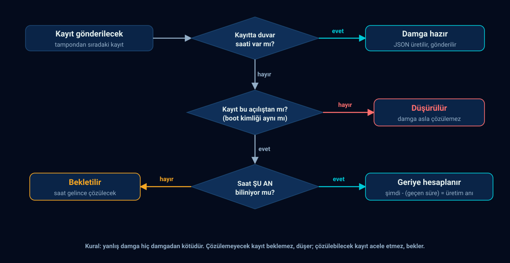
Sorun nasıl ortaya çıkıyor
Kapalı bir otoparkta duran kamyonu düşünün. Sürücü kontağı açıyor, cihaz çalışmaya başlıyor, ama ne uydu görüyor ne şebeke çekiyor. Yani saatin kaç olduğunu bilmiyor. 20 dakika boyunca veri toplayıp belleğe yazıyor. Sonra araç açık havaya çıkıyor, şebeke geliyor, saat öğreniliyor.
O 20 dakikalık verinin zaman damgası ne olacak?
Çözüm: sonradan geriye doğru hesaplamak
Cihazın iki farklı saati var:
- Duvar saati: gerçek tarih ve saat. Öğrenilmesi bağlantı gerektiriyor, öğrenilince ileri/geri sıçrayabiliyor.
- Açılıştan beri geçen süre: her zaman biliniyor, hiç sıçramıyor, ama tarih bilgisi taşımıyor.
Cihaz her raporun yanına "açılışın kaçıncı saniyesinde üretildim" bilgisini yazıyor. Saat sonradan öğrenildiğinde şu hesap yapılıyor:
Şimdi saat 07:20 ve açılışın 1200. saniyesindeyiz.
Bu rapor açılışın 60. saniyesinde üretilmiş.
Fark 1140 saniye = 19 dakika.
Demek ki rapor 07:01'de üretildi.Bu sayede otoparkta biriken raporlar üretildikleri saatlerin damgasıyla gönderiliyor, gönderildikleri saatle değil.
Saat üç kaynaktan öğrenilebiliyor
| Kaynak | Neye ihtiyaç var |
|---|---|
| İnternet zaman sunucusu | Çalışan bağlantı |
| Uydu alıcısı | Uydu sabitlemesi. Şebeke gerekmiyor |
| Hücresel modem | Şebekeye kayıt |
Uydu kaynağı özellikle değerli: şebeke hiç çekmeyen bir yerde bile doğru damga üretilebiliyor.
Çözülemeyen durum ve nasıl ele alındığı
Bir açık uç var: cihaz yeniden başlarsa "açılıştan beri geçen süre" sayacı sıfırlanıyor. Yeniden başlatmadan önce yazılmış, damgası olmayan bir raporun sayacı yeni oturumda anlamsız hâle geliyor. Geriye hesaplasak rastgele bir tarih çıkardı.
Bu yüzden her açılışta rastgele bir kimlik üretiliyor ve raporlara yazılıyor. Kimlik uyuşmuyorsa rapor düşürülüyor; beklemek de anlamsız, çünkü o rapor bir daha asla damgalanamaz ve sırada bekleyen diğerlerini sonsuza kadar tıkardı.
Tamponda bekliyor. Yanlış damgalı bir rapor filo veritabanına girdikten sonra ayıklanamaz: güzergâhı, hız raporunu ve mesai raporunu aynı anda bozar. Beklemek çok daha ucuz, zaten tamponun varlık sebebi bu.
Şebeke yokken: tampon
Kısaca: araçta şebeke kesilmesi istisna değil, normal. Tünel, kapalı otopark, kırsal yol, iki baz istasyonu arası geçiş. Cihaz bu sürelerde raporları kalıcı belleğine yazıyor ve bağlantı gelince sırayla gönderiyor.
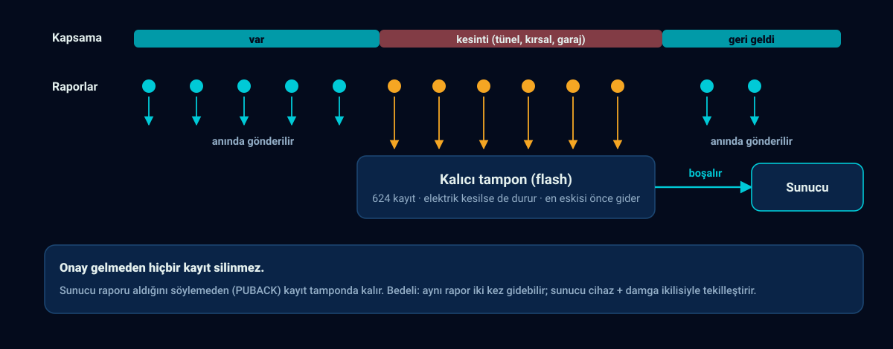
Ailenin ilk ürünü olan saatte böyle bir mekanizma yoktu: WiFi yoksa rapor sessizce atlanıyordu. Bir giyilebilir cihazda kaçan ölçüm sadece eksik bir veri noktası. Araç takibinde ise eksik bir güzergâh demek. Filo ekranında araç kayboluyor ve hız, mesai, bölge raporları yanlış çalışıyor.
Kaç rapor sığıyor?
2,4 MB'lık bölüm 624 rapor alıyor. Dakikada bir rapor üreten bir araçta bu yaklaşık 10 saat demek. Park hâlinde (10 dakikada bir) çok daha uzun.
Neden dosya sistemi kullanılmadı?
Bilgisayarlardaki gibi bir dosya sistemi kurmak yerine bellek doğrudan sabit boyutlu bölmelere ayrıldı. Sebebi: dosya sistemi açılırken zaman ve bellek harcıyor, bozulma riski taşıyor, ve küçük parçaları sık sık yazmak tam olarak en kötü çalıştığı durum. Buna karşılık ihtiyacımız çok basit: sırayla dolan, sırayla boşalan sabit bölmeler. Dosya adı, klasör, boyut değiştirme hiçbiri kullanılmayacak.
Elektrik kesilirse ne olur?
Kalıcı belleğin bir özelliği var: yazma işlemi bitmeden elektrik kesilirse yarım yazılmış veri kalıyor. Bunun yarım bir raporun geçerli sanılmasına yol açmaması için sıra tersine çevrildi: önce raporun içeriği, en son "bu bölme dolu" işareti yazılıyor.
Böylece yazma ortasında elektrik kesilirse işaret hiç oluşmuyor ve bölme boş sayılıyor. Yarım rapor hiçbir zaman gönderilmiyor.
Bellek dolarsa hangi rapor gidiyor?
En eskisi. Bu, araç verisi tablosundaki kararın tam tersi (orada yeni gelen atılıyor, mevcutlar korunuyor) ve çelişki değil: orada yarışan şeyler farklı sinyaller, hepsi gerekliydi. Burada ise aynı bilginin farklı zamanları yarışıyor.
Filo ekranına bakan kişi aracın şu anki yerini görmek istiyor. 10 saat önceki bir noktayı kaybetmek, güncel noktayı kaybetmekten iyidir. Yeni raporu reddetmek ise cihazı canlı veri üretemez hâle getirirdi.
Silme, onay geldikten sonra
Rapor gönderildikten hemen sonra silinmiyor; sunucunun "aldım" onayı bekleniyor. Tek adımda silseydik, tam o anda kopan bir bağlantı raporu hem göndermemiş hem silmiş olurdu.
Bellek ne kadar dayanır?
Kalıcı bellek sonsuz kez yazılamıyor; her bölme yaklaşık 100.000 kez silinebiliyor. Hesap: dakikada bir rapor = günde 1440 rapor, 624 bölme = günde 2,3 tam tur. 100.000 ÷ 2,3 ≈ 43.000 gün, yani yüz yılı aşkın. Cihazın ömrü yanında yok sayılır.
Bağlantı ve gönderim
Kısaca: cihaz iki farklı yolla internete çıkabiliyor: sahada hücresel modem, atölyede WiFi. Üst katman hangisinin kullanıldığını bilmiyor, bu yüzden aynı yazılım her iki durumda da çalışıyor.
İki bağlantı yolu, tek arayüz
| Yol | Nerede |
|---|---|
| Hücresel modem | Sahada, araç içinde. Asıl yol |
| WiFi | Atölyede, geliştirme sırasında |
Seçim yazılımı yeniden derlemekle değil, ayarla yapılıyor. Yani aynı yazılım hem atölyede hem araçta çalışıyor; iki ayrı sürüm üretmek gerekmiyor.
Bağlantı kurulamazsa cihaz 5 saniye sonra tekrar deniyor; olmazsa 10, sonra 20… en fazla 5 dakikaya kadar. Sabit aralık araçta yanlış olurdu: tünelde ya da kırsalda saatlerce şebeke olmayabiliyor ve saniyede bir denemek hem elektrik hem veri harcıyor.
Bu mantık bağlantı yollarının içinde değil, üstünde duruyor. Böylece WiFi ve modem aynı davranışı paylaşıyor, ikinci kez yazılmıyor.
Uzaktan komut gönderme
Cihaz gönderdiği raporların yanı sıra, kendisine ayrılmış bir kanalı da dinliyor. Buraya gönderilen komutlar USB'den yazılmış gibi işleniyor ve yanıt geri dönüyor.
Ekransız bir araç cihazında bu, sahada tek müdahale imkânı olabilir: araç başka şehirde, cihaz aracın altında, kimse ona ulaşamıyor.
Verinin hangi adrese, hangi kanal adlarıyla ve nasıl bir kimlik doğrulamasıyla gönderileceği sunucu ekibiyle netleştirilmedi. Cihaz şu an kendi varsayımlarıyla çalışıyor. Bütün varsayımlar tek bir dosyada toplandı; anlaşma netleşince yalnız o dosya değişecek, servis kodu değişmeyecek. Ayrıntı Sunucu Tarafı bölümünde.
Konum
Kısaca: uydu alıcısı saniyede bir, metin satırları hâlinde konum bildiriyor. Cihaz bu satırları okuyup enlem, boylam, hız, yön ve uydu sayısını çıkarıyor. Alıcı aynı zamanda ikinci saat kaynağı.
Alıcı ne gönderiyor?
Konum alıcıları standart bir metin biçimi kullanıyor (NMEA). Her satır bir bilgi taşıyor; cihaz ikisiyle ilgileniyor:
| Satır | İçindekiler |
|---|---|
| RMC | Konum, hız, yön, tarih ve saat, geçerlilik |
| GGA | Konum, sabitleme kalitesi, uydu sayısı |
İkisi de gerekli: RMC'de uydu sayısı yok, GGA'da tarih yok (yalnız saat var, dolayısıyla ondan damga üretilemez).
Her satırın sonunda bir doğrulama kodu var. Kablo üzerinde tek bir baytın bozulması 4807.038 yerine 4907.038 okutabilir, yani 111 kilometrelik sıçrama. Filo tarafında bu hem hız alarmı üretir hem güzergâhı bozar, üstelik sunucunun bunu ayıklama şansı yoktur. Doğrulama kodu tutmayan satırdan hiçbir bilgi alınmıyor.
Alıcı tünelde uyduları kaybettiğinde son bilinen konumu tutmaya devam etmek cazip görünüyor ama yanlış: hareket eden bir araçta 10 dakikalık eski nokta "şu anki konum" olarak gidiyor ve sunucu bunu sorgulamıyor. Sonuç, haritada duran ama gerçekte yol alan bir araç.
Bu yüzden 10 saniyeden eski sabitleme geçersiz sayılıyor ve rapora "konum yok" bilgisi gidiyor.
Boş alan sıfır demek değil
Sabitleme henüz yokken alıcı alanları boş bırakıyor. Boşu sıfır olarak okumak aracı Gine Körfezi'ne (0 enlem, 0 boylam) koymak olurdu ve sunucu bunu geçerli bir konum sanardı. Cihaz "bu alan yok" ile "bu alan sıfır" arasındaki farkı ayrı tutuyor.
Kapalı alanda konum: uydu kesilince tahminle sürdürme
Uydu görünürken konum doğrudan uydudan alınıyor. Tünelde ya da kapalı otoparkta uydu kesildiğinde cihaz son bilinen uydu noktasından başlayıp konumu tahmin ederek sürdürüyor: ne kadar yol alındığı aracın kendi hız verisinden, ne kadar dönüldüğü jiroskoptan okunuyor. Bu yönteme "ölü hesap" deniyor ve ticari takip cihazlarının tünel çözümü budur. Uydu geri geldiğinde tahmin bırakılıyor ve bir sonraki kesinti için o taze noktadan yeniden başlanıyor; biriken hata her seferinde sıfırlanıyor.
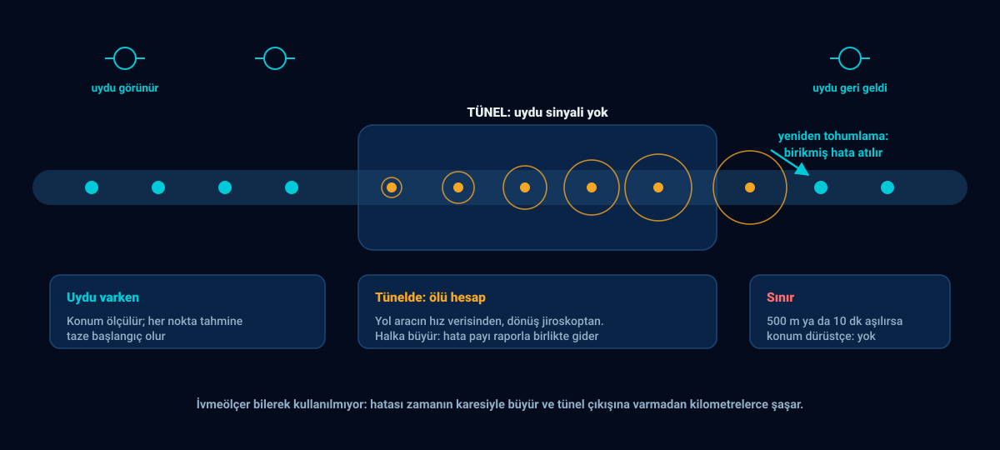
| Kaynak | Ne veriyor | Durum |
|---|---|---|
| Aracın hız verisi (CAN) | Ne kadar yol alındığı | Uygulandı. Tek sinyal çözülüyor: tekerlek hızı |
| Jiroskop (ICM-42688-P) | Ne kadar dönüldüğü | Sürücü hazır, sensör henüz elde yok |
| WiFi ağ taraması | Kaba konum doğrulaması | Uygulandı (aşağıda ayrı bölüm) |
İvmeölçerden konum çıkarmak için ivmeyi iki kez toplamak gerekiyor ve sensörün küçük sapması bu işlemde zamanın karesiyle büyüyor. Yarım dakikada hata onlarca metreye çıkıyor, birkaç dakikada kullanılamaz hâle geliyor.
Bu yüzden mesafe bilgisi aracın kendi hız verisinden alınıyor: o ölçümün hatası mesafeyle doğrusal büyüyor ve yüzde birkaç düzeyinde kalıyor. Jiroskop yalnız yön değişimi için kullanılıyor.
Tahmin ölçüm değildir ve cihaz bunu saklamıyor:
- Hata payı takip ediliyor ve raporlanıyor. Her tahmin adımında hata yarıçapı büyütülüyor ve rapora yazılıyor.
- Aşırı sapmış tahmin gönderilmiyor. Hata yarıçapı 500 metreyi ya da süre 10 dakikayı aşarsa rapora "konum yok" bilgisi gidiyor. "Eski konum, konum yokluğundan kötüdür" kuralının tahmine uygulanmış hâli.
- Hız verisi yoksa tahmin hiç başlamıyor. Jiroskop tek başına konum üretemez.
- Jiroskop sapması araç dururken ölçülüyor ve okumadan düşülüyor. Sapma düzeltilmezse duran araçta bile yön kayar ve tünele girildiği anda tahmin yanlış yöne gider. Jiroskop hiç yoksa yön sabit varsayılıyor ve hata payı daha hızlı büyüyor.
Rapora iki alan eklendi: positionSource (uydu için "gnss", tahmin için "dr", konum yoksa "none") ve metre cinsinden hata yarıçapı positionAccuracy. Bu alanlar filo dokümanında henüz yok; sunucu tarafıyla mutabakat gerekiyor. Sunucu bu ayrımı kaydetmezse tahmini konum uydu konumu gibi işlenir ve güzergâh doğruluğu sessizce bozulur.
Yol bilgisi için cihaz araç hattından tek bir sinyali (tekerlek hızı) kendisi çözüyor. Ham veri yine değiştirilmeden sunucuya gidiyor; istisna bu tek sinyalle sınırlı.
Durum pos status komutuyla izleniyor: konum kaynağı, hata yarıçapı, tahminle gidilen yol, jiroskop sapması ve hız verisinin gelip gelmediği. Bu bölümün matematiği bilgisayarda testlerle sınandı; jiroskop ve CAN ara yongası henüz elde olmadığı için araçta doğrulanmadı.
Kapalı alanda ek kanıt: WiFi listesi
Tünelin çözümü yukarıdaki tahmin; uydu görmeyen diğer kapalı alanlarda (otopark, AVM, bina içi) ise bir kanıt daha var. Konum uydudan gelmediği sürece cihaz 30 saniyede bir çevredeki WiFi ağlarını tarıyor ve en güçlü 8 ağın kimliğini (MAC) + sinyal gücünü rapora ekliyor. Konumu cihaz çözmüyor: araç verisindeki kalıbın aynısı, ham liste sunucuya gidiyor ve konum orada, bilinen ağ konumları veritabanından çözülüyor.
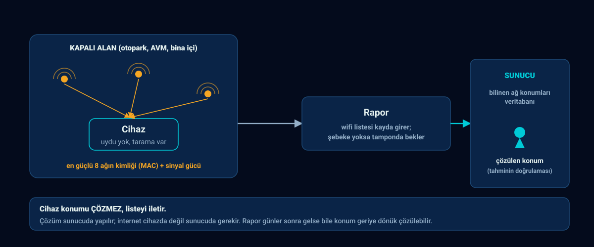
- Cihazın internete ihtiyacı yok. Liste raporla birlikte tamponda bekliyor; şebekesiz kapalı alanda üretilen rapor sonradan gönderildiğinde konum geriye dönük çözülüyor.
- Aile içinde hazır altyapı. Saat ürünü konumu aynı yöntemle buluyor ve sunucu tarafındaki çözücü servis yazılmış durumda (varsayılan beaconDB, tek ayarla Google'a geçiyor). Drive için yeniden yazılması gerekmiyor.
Son taramanın üzerinden 2 dakikadan fazla geçtiyse liste rapora eklenmiyor. Araç ilerlemişken iki dakika önce çıkılan kapalı alanın ağlarını "şu an buradayım" diye göndermek sunucuyu yanıltırdı. Bayat sabitleme kuralının bir uygulaması daha.
Sınırı da açık: tünelde WiFi yok, orada bu listenin katkısı olmaz. Baz istasyonu bilgisiyle kaba doğrulama modem donanımı gelince değerlendirilecek. Tarama wifi scan komutuyla elle de çalıştırılıyor; modül olmayan ortamda wifi inject ile liste beslenip kayıt yolu uçtan uca sürülebiliyor.
İki haneli yıl sorunu
Alıcı yılı iki haneli gönderiyor: 26. Bu 2026 mı 1926 mı? "80'den büyükse 19xx" gibi bir varsayım kurmadık, çünkü arızalı bir alıcı yaklaşık 19,6 yıl geçmişte bir tarih üretebiliyor ve böyle bir varsayım o hatayı makul bir tarihe çevirip gizlerdi.
Bunun yerine çözücü dürüst kalıyor (2000'i ekliyor) ve makullük kontrolü saati kuran yerde yapılıyor: 2020 öncesi her tarih reddediliyor ve reddedilenler sayılıyor.
Kablosuz güncelleme
Kısaca: cihaz yazılımını kendi kendine güncelleyebiliyor. Mekanizma ailenin ilk ürünüyle aynı ama politika tamamen farklı, ve bunun tek bir sebebi var: bu cihaza kimse fiziksel olarak ulaşamıyor. Saatte bozuk bir güncelleme kullanıcıyı rahatsız eder, kullanıcı cihazı bilgisayara takar. Araç cihazı ise aracın altında, ekransız, belki başka şehirde.
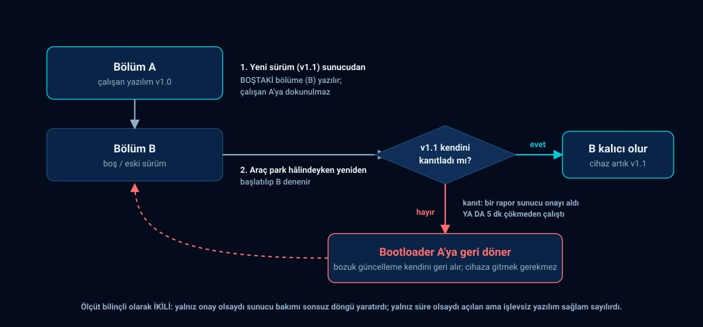
Bozuk güncelleme kendini geri alıyor
Güncelleme boştaki yazılım bölümüne yazılıyor ve cihaz ona geçiyor. Yeni yazılım kendini "sağlam" ilan etmezse, bir sonraki açılışta cihaz eski sürüme dönüyor.
Peki "sağlam" ne demek? İki koşuldan biri yeterli, hangisi önce gerçekleşirse:
- Bir rapor gönderilip sunucudan onay alındı. Bütün zincir çalışıyor demek, en güçlü kanıt
- Yazılım 5 dakika boyunca çökmeden çalıştı
Neden ikisi birden? Yalnız birincisi olsaydı, sunucu bakımdayken güncellenen bir cihaz kendini asla sağlam ilan edemez, ilk elektrik kesintisinde eski sürüme döner ve sonsuz güncelleme döngüsüne girerdi. Sunucu arızası yazılım hatası değil. Yalnız ikincisi olsaydı, açılan ama işe yaramayan bir yazılım sağlam sayılırdı.
Güncelleme ne zaman kuruluyor?
Araç park hâlindeyken. Yol ortasında yeniden başlatmak takibi yaklaşık 30 saniye kesiyor ve filo ekranında araç kayboluyor.
Saatte bunun karşılığı "gece, kullanıcı uyurken"di. Araçta daha iyi bir sinyal var: kontak.
Sunucu bir güncellemeyi "acil" işaretleyebiliyor; o durumda park saati beklenmiyor. Kritik bir güvenlik yaması için ayrılmış bir yol.
Sorun olmuyor. Güncelleme boştaki bölüme yazıldığı için yarım kalan yazma hiç devreye alınmıyor; cihaz eski yazılımla çalışmaya devam ediyor.
Sürüm karşılaştırması
Cihaz sunucudan gelen sürüm numarasını kendisiyle karşılaştırıyor. Karşılaştırma metin olarak değil sayı olarak yapılıyor, çünkü metin karşılaştırmasında "0.10.0" "0.2.0"'dan küçük çıkıyor, bu da güncellemede yanlış yöne gitmek demek.
Sunucu yanlışlıkla eski bir sürüm bildirirse kurulum yapılmıyor; sahadaki araçlar geri düşürülmüyor.
Sunucu tarafı
Kısaca: cihaz tek başına işe yaramaz. Karşısında iki servis olmalı: raporları alıp veritabanına yazan servis ve yazılım güncellemesi bildiren servis. Bu bölüm sunucu ekibinin ne yapması gerektiğini anlatıyor.
Sunucu ekibiyle mutabık kalınmış hâli değil. Adresler, kanal adları ve kimlik doğrulama netleşince cihazda tek bir dosya değişecek. Netleşmesi gereken maddeler bölümün sonunda listeli.
Mesaj kanalları
Cihaz MQTT adlı bir mesajlaşma protokolü kullanıyor. Mesajlar "kanal" (topic) adı verilen adreslere gönderiliyor. Kanal adı narrtos/drive ile başlıyor, ardından cihazın IMEI numarası geliyor:
| Kanal | Yön | İçerik |
|---|---|---|
narrtos/drive/<imei>/telemetry | cihaz → sunucu | Rapor |
narrtos/drive/<imei>/status | cihaz → sunucu | online / offline |
narrtos/drive/<imei>/cmd | sunucu → cihaz | Komut |
narrtos/drive/<imei>/cmd/reply | cihaz → sunucu | Komut yanıtı |
Cihaz bağlanırken sunucuya bir vasiyet bırakıyor: "bağlantım beklenmedik şekilde koparsa benim adıma offline yaz." Mesajlaşma sunucusu kopmayı fark ettiğinde bunu kendisi yayınlıyor.
Böylece filo ekranı "araç park etti, rapor göndermiyor" ile "cihaza erişilemiyor" arasındaki farkı ek bir zaman aşımı mantığı kurmadan görebiliyor.
Güç yönetimi açık cihaz park hâlinde bilerek uyur: uyumadan önce offline yayınlar, park raporu periyodunda kısaca uyanıp raporunu gönderir ve tekrar uyur. Yani park hâlindeki cihazın çoğunlukla offline görünmesi arıza değildir.
Rapor alan servis ne yapmalı
narrtos/drive/+/telemetrykanalına onaylı teslim (QoS 1) ile abone ol. Cihaz onay gelmeden raporu silmiyor; onay vermeyen bir alıcı cihazın belleğini doldurur.- Gelen raporu doğrula: içindeki IMEI kanal adındaki IMEI ile aynı olmalı.
- Ham araç verisini tanım dosyasıyla çöz. Cihaz işlenmemiş veri gönderiyor.
- Zaman damgasını metin biçiminden tarih tipine çevir, çünkü veritabanı sorguları tarih karşılaştırması yapıyor.
- Raporu ilgili araç koleksiyonuna yaz.
- Türetilmiş bilgileri hesapla: araç durumu, rölanti süresi, çalışma süresi. Cihaz bunları göndermiyor.
wifi listesi nasıl çözülür?Kapalı alanda üretilen raporlarda wifi alanı olabilir: çevredeki ağların MAC + sinyal listesi. Ailenin saat ürününün sunucu yazılımında bu listeyi konuma çeviren hazır bir servis var (geolocation.service.js): Ichnaea/beaconDB uyumlu, GEOLOCATE_URL ve GEOLOCATE_KEY ayarlarıyla Google Geolocation API'ye geçiyor, sonuçları önbellekliyor. Çözülen konum tahmini konumun doğrulaması olarak kullanılmalı, ölçülmüş konum olarak değil.
Onay zamanında gelmezse cihaz raporu silmeyip tekrar gönderiyor. Kaybetmek yerine tekrarlamak tercih edildi. Alan servis, cihaz kimliği ve zaman damgası ikilisiyle tekilleştirme yapmalı. Yoksa güzergâhta çift noktalar oluşur.
Şebeke kesintisi sonrası tampon boşalırken saatler önce üretilmiş raporlar arka arkaya düşüyor. Rapordaki zaman damgası üretim anıdır, geliş anı değil. Alan servis "şimdi geldi = şimdi oldu" varsayamaz; sıralamayı damgaya göre yapmalı.
Güncelleme bildiren servis
Cihaz 6 saatte bir soruyor:
GET <adres>?device_id=<imei>¤t=<sürüm>&product=driveBeklenen yanıt:
{
"version": "0.2.0",
"version_code": 200,
"url": "https://ota.ornek.com/drive/0.2.0.bin",
"size": 924235,
"notes": "CAN tablosu düzeltmesi",
"forced": false
}| Alan | Zorunlu | Davranış |
|---|---|---|
version_code | evet | Cihazdakinden büyükse kurulur; eşit veya küçükse kurulmaz |
url | evet | Yazılım dosyasının adresi |
version, size, notes | hayır | Bilgi amaçlı |
forced | hayır | true ise park beklenmez |
Zorunlu alanı eksik bir yanıt reddediliyor, çünkü yarım bir bildirim kurulum başlatmamalı.
Aynı adres paylaşılırsa saate araç yazılımı iner. Cihaz ayırt edilebilmek için product=drive gönderiyor, ama güvenilir ayrım sunucu tarafında yapılmalı: ayrı bir adres ya da bu parametreye göre zorunlu filtre.
forced: true aracı yol ortasında yeniden başlatabilir ve takip yaklaşık 30 saniye kesilir. Yalnız gerçek kritik yamalarda kullanılmalı.
Sunucu ekibiyle netleşmesi gerekenler
- Sunucu adresi ve portu. Şifreli bağlantı kullanılacak mı? Kullanılacaksa sertifika nasıl sağlanacak?
- Kimlik doğrulama. Kullanıcı adı/şifre mi, sertifika mı, jeton mu? Cihazda alanlar hazır ama boş.
- Kanal adları. Yukarıdaki isimler cihazın varsayımı.
- Cihaz kimliği olarak IMEI kabul edilecek mi?
- Toplu gönderim. Tampon boşalırken raporlar tek tek gidiyor. Sunucu liste hâlinde kabul ederse çok daha verimli olur.
- Güncelleme adresi ve yazılım dosyalarının barındırılacağı yer.
Sunucudaki araç verisi eşleştirmesi, mesajın öncelik bilgisine duyarlı. Aynı sinyali farklı öncelikle yayınlayan bir araçta veri çözülmüyor ve bu sessizce oluyor. Sunucu hata vermiyor. Cihaz kimliği hiç değiştirmeden gönderdiği için sorun cihazda değil; ama sahada "sinyal gelmiyor" olarak görüleceği için tanım dosyası tarafında öncelikten bağımsız eşleştirme değerlendirilmeli.
Güvenlik durumu
Kısaca: bu bölüm neyin korunduğunu değil, şu an neyin korunmadığını anlatıyor. Cihaz geliştirme aşamasında ve güvenlik katmanı henüz yazılmadı. Sahaya çıkmadan kapatılması gerekenler aşağıda.
Kanallar
| Kanal | Şifreleme | Kimlik doğrulama | Risk |
|---|---|---|---|
| USB konsolu | yok | yok | Fiziksel erişim gerekiyor; cihaz araç içinde |
| Rapor gönderimi | yok | yok | Konum ve araç verisi açık metin akıyor |
| Uzaktan komut | yok | yok | En ciddi açık. Aşağıya bakın |
| Yazılım güncelleme | yok | yok | İmzasız yazılım indirme |
| Cihazdaki ayarlar | yok | geçerli değil | Bellek okunursa şifreler açık metin |
Mesajlaşma sunucusuna bağlanabilen herkes cihaza komut gönderebiliyor. Kanal adında IMEI olması adresleme sağlıyor, güvenlik sağlamıyor.
Kötü niyetli biri cihazı fabrika ayarına döndürebilir, raporları başka bir sunucuya yönlendirebilir ya da sürekli yeniden başlatarak takibi kesebilir. Kimlik doğrulama eklenene kadar bu kanal yalnız güvenilir bir ağda kullanılmalı.
Yazılım şifresiz bir bağlantı üzerinden, imza kontrolü olmadan indiriliyor. Araya girebilen biri kendi yazılımını yükletebilir.
Geri alma mekanizması bunu engellemiyor: geri alma açılışta çöken yazılıma karşı koruma sağlıyor, kötü niyetli ama çalışan bir yazılım kendini sağlam ilan eder. Gereken şifreli bağlantı ve imza doğrulaması.
Şu an var olan korumalar
- Cihaz aracın veri yoluna yazmıyor. Yazma yeteneği hiç kurulmuyor, yani cihaz ele geçse bile araca müdahale edilemez. Listedeki en değerli koruma.
- Şifreler konsola basılmıyor. Konsol çıktısı loglara ve destek yazışmalarına düşüyor.
- Geri alma: açılışta çöken güncellemeye karşı (kötü niyetliye karşı değil).
- Sürüm düşürme engeli: sunucu eski sürüm bildirirse kurulmuyor.
Kapatılması gerekenler
- Şifreli bağlantı: hem rapor gönderimi hem güncelleme için
- Sunucu kimlik doğrulaması: cihazda alanlar hazır, boş duruyor
- Yazılım imzası
- Ayarların şifrelenmesi
- Komut yetkilendirmesi: en azından yıkıcı komutların uzaktan kapatılabilmesi
İlk ikisi sıradaki iş olarak planlandı.
Komut arayüzü
Kısaca: cihaz metin komutlarıyla sürülüyor. Aynı komutlar iki yerden gönderilebiliyor: USB kablosuyla bilgisayardan, ya da bağlantı varken uzaktan.
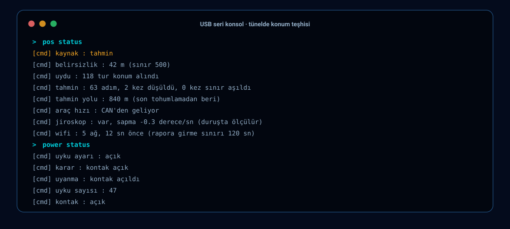
Ayar komutları
| Komut | Ne yapar |
|---|---|
set imei <numara> | Cihaz kimliği |
set mqtt host|port|user|pass | Sunucu ayarları |
set wifi ssid|pass | Atölye WiFi'si (boşluklu isim yazılabilir) |
set net backend | Modem mi WiFi mi kullanılacak |
set apn <ad> | Operatörün veri ağı adı |
set power sleep <0|1> | Kontak kapanınca derin uyku (sahada 1 olmalı) |
set ota url <adres> | Güncelleme adresi (boş = güncelleme kapalı) |
set can bitrate <hız> | Araç hattı hızı |
set gnss baud <hız> | Uydu alıcısı hızı |
get config | Bütün ayarları göster |
config clear | Fabrika ayarlarına dön |
Durum komutları
| Komut | Ne gösterir |
|---|---|
info | Sürüm, çalışma süresi, bellek, ağ, tampon durumu |
net status | Bağlantı durumu |
net modem | Modem hangi adımda, sinyal gücü, IMEI |
mqtt status | Sunucu bağlantısı ve sayaçlar |
time status | Saat ve nereden öğrenildiği |
gnss status | Sabitleme, uydu sayısı, sayaçlar |
pos status | Konum kaynağı (uydu/tahmin), hata yarıçapı, jiroskop |
wifi scan · wifi status | Çevredeki ağları tara / tarama sayaçları |
sf stats | Tampon doluluğu ve kalan süre |
can stats · can dump | Araç verisi tablosu |
telemetry status | Rapor sıklığı, kontak durumu |
ota status | Sürüm ve güncelleme durumu |
power status | Uyku kararı, uyanma sebebi, uyku sayısı |
led status | LED ne gösteriyor |
selftest | Donanım checklist'i — tüm çevrebirimleri sırayla sınar (bkz. Test ve doğrulama) |
Donanımsız test komutları
CAN ara yongası, uydu alıcısı ve modem elimizde yok. Bu komutlar sürücü katmanını tamamen atlayıp doğrudan servise veri veriyor. Yani gerçek veriyle elle beslenen veri, sistemin içinde ayırt edilemiyor.
can inject 0x18FEE500,01,02,03,04,05,06,07,08 # araç verisi
gnss inject $GPRMC,...*XX # konum
telemetry ignition 1 # kontağı aç, anında rapor üretilir
telemetry now # hemen bir rapor üret
sf peek # gidecek raporu göster
net offline 1 # şebeke kaybını taklit et
sf stats # tampon doluyor mu?
net offline 0 # şebeke döndü, tampon boşalırDurum LED'i
Kısaca: ekran yok, buton yok, ses yok. Kablo takılıyken konsol var, bağlantı varken uzaktan komut var. Ama kurulumcu aracın altında ve cihaz henüz ağa girmemişken ikisinden de yararlanamıyor. Tek yerel gösterge bu LED.
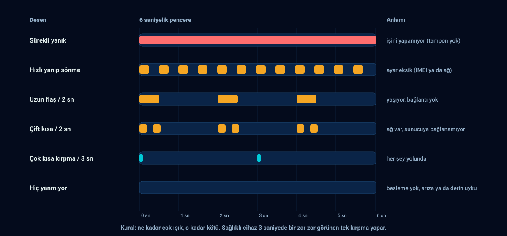
Desen dili tek bir kurala dayanıyor: ne kadar çok ışık, o kadar kötü.
| Desen | Anlamı |
|---|---|
| Sürekli yanık | Cihaz işini yapamıyor (belleğinde sorun var) |
| Hızlı yanıp sönme | Ayar eksik |
| Uzun tek flaş / 2 sn | Çalışıyor ama şebeke yok |
| Çift kısa flaş / 2 sn | Şebeke var, sunucuya bağlanamıyor |
| Çok kısa kırpma / 3 sn | Her şey yolunda |
| Hiç yanmıyor | Elektrik yok, cihaz arızalı ya da derin uykuda (uyku açıksa park hâlinde normaldir) |
Bu sayede "hiç yanmıyor" tek başına arıza sinyali oluyor, üstelik ek bir maliyet olmadan. Sağlıklı durumu "sürekli yanık" yapan tasarımlarda bu ayrım kayboluyor: yanmayan LED ile arızalı cihaz aynı görünüyor.
"Şebeke var ama sunucuya bağlanamıyor" ayrı bir desen, çünkü kurulumcuyu antene değil sunucu adresine bakmaya yönlendiriyor.
Aynı anda birden çok sorun olabilir; en derindeki gösteriliyor. Ayarı eksik bir cihaz aynı zamanda şebekesizdir, ama "şebeke yok" göstermek kurulumcuyu anten aramaya iterdi. Oysa sorun kendi girmediği ayarda.
Güç yönetimi
Kısaca: kontak kapanınca cihaz bekleyen işlerini bitirip derin uykuya geçebiliyor. Uykuda tüketim binlerce kat düşüyor; araç haftalarca park etse de akü cihaz yüzünden bitmiyor. Özellik varsayılan olarak kapalı geliyor ve sahaya çıkan cihazda set power sleep 1 ile açılıyor.
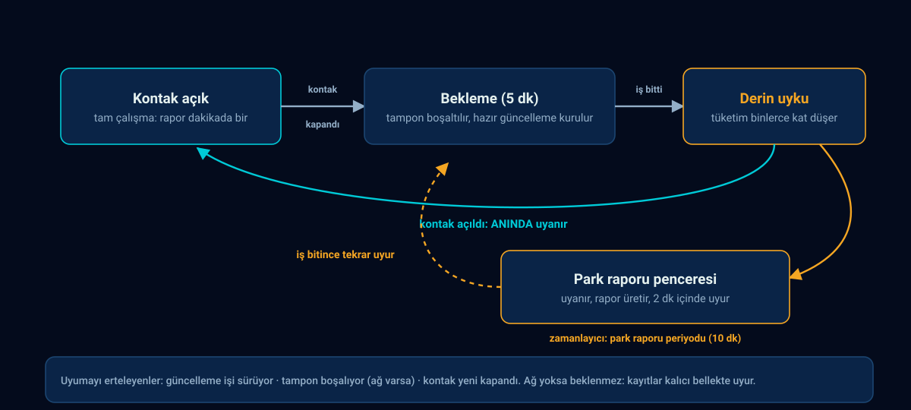
Neden var?
Cihaz aracın aküsünden besleniyor ve kontak kapalıyken de tam güçte çalışırsa aküyü yavaş yavaş boşaltıyor. Uzun parkta (havalimanı, servis, tatil) bunun sahadaki adı "takip cihazı aracımı çalışmaz yaptı"dır ve bir takip ürünü için bundan kötü şöhret olmaz.
Kontak kapanınca ne oluyor?
- Cihaz hemen uyumuyor: 5 dakika bekliyor. Bu süre kontak raporunun ve tamponda bekleyenlerin gönderilmesine, hazır bir güncelleme varsa kurulmasına yetiyor. Kısa duraklamalarda (market, trafik) gereksiz uyu/uyan döngüsü de böylece önleniyor.
- Bekleme dolunca ve iş kalmayınca sunucuya
offlinebilgisi bırakılıp derin uykuya geçiliyor. - Uykudan iki şey uyandırıyor: kontak açılırsa anında; ya da park raporu zamanı gelince zamanlayıcıyla. Zamanlayıcı uyanışında cihaz bir park raporu üretip kısa bir pencere içinde işini bitiriyor ve tekrar uyuyor.
Uyumayı erteleyen ve uyuduran hâller
| Durum | Karar |
|---|---|
| Kontak açık ya da yeni kapandı | uyumaz |
| Güncelleme iniyor ya da kurulum bekliyor (ağ varsa) | uyumaz |
| Tampon boşalıyor (ağ varsa) | uyumaz, tavana kadar |
| İş kalmadı | uyur |
| Ağ yok (tampon dolu olsa bile) | uyur; kayıtlar kalıcı bellekte bekler |
| Tampon boşalmıyor, tavan doldu | uyur |
Karar mantığı ayrı ve saf bir modülde duruyor ve bilgisayarda testle sınanıyor, çünkü iki yönde de hata pahalı: gereksiz uyanık kalmak akü bitirir, erken uyumak rapor ve güncelleme kaçırır.
Cihazın saat tutan devresi (RTC) derin uykuda çalışmaya devam ediyor. Uyanan cihaz saati yeniden öğrenmek zorunda kalmıyor; park raporunun zaman damgası uyanır uyanmaz üretilebiliyor.
1. Damgasız kayıtlar uykudan sonra düşer: saat hiç öğrenilmemişse tampondaki kayıtlar zaten hiçbir yeniden başlatmadan sağ çıkamıyordu (bkz. zaman damgası bölümü); uyku bu durumu yaratmıyor, kesinleştiriyor. Saat gelmeden uyumamak ise garajda unutulan aracın aküsünü bitirirdi.
2. Uykuda USB konsolu kapanır. Masadaki geliştirme cihazında özellik bu yüzden kapalı tutulmalı; uyuyakalan cihaz "bozuldu" sanılıyor.
Sınırlar ve kaynak kullanımı
Hepsi tek bir yapılandırma dosyasında tanımlı ve derleme sırasında değiştirilebiliyor.
Veri sınırları
| Sınır | Değer | Aşılırsa |
|---|---|---|
| Aynı anda izlenen araç sinyali | 96 | Yeni sinyal atılır ve sayılır |
| Rapor başına araç mesajı | 64 | En güncel 64 tanesi gider |
| Tampon kapasitesi | 624 rapor (~10 saat) | En eski rapor silinir ve sayılır |
| Rapor boyutu (sıkıştırılmış) | en çok 933 bayt (WiFi listesi dahil) | sınır yok |
| Rapor boyutu (metin) | ~2.900 bayt | 3.456 baytlık alana sığıyor (ölçüldü) |
| Aynı anda gönderimde olan rapor | 1 | Sıra korunur; birikmiş tampon yavaş boşalır |
| Onay bekleme süresi | 15 saniye | Rapor korunur, yeniden denenir |
| Komut satırı uzunluğu | 256 bayt (USB) / 192 (uzaktan) | Satır atılır |
Süreler
| Ne | Süre |
|---|---|
| Rapor sıklığı (çalışıyor / park) | 1 dakika / 10 dakika |
| Bağlantı yeniden deneme | 5 saniye → 5 dakika (giderek uzuyor) |
| Konum tazelik sınırı | 10 saniye |
| Güncelleme kontrolü | 6 saat |
| Yeni yazılımın sağlamlık süresi | 5 dakika |
| Takılan işi yakalayan sayaç | 10 saniye |
Bellek
| Kaynak | Kullanılan | Toplam |
|---|---|---|
| Çalışma belleği (RAM) | 58 KB | 320 KB (%18) |
| Yazılım boyutu | 952 KB | 2,8 MB (%33) |
Ek bellek yongası (PSRAM) kullanılmıyor: ekran olmadığı için gerekmiyor ve tampon kalıcı bellekte duruyor.
Test ve doğrulama
Kısaca: cihazın donanımı büyük ölçüde elimizde yok. Buna rağmen yazılımın büyük kısmı doğrulanabiliyor, çünkü kritik parçalar donanım bilmeyecek şekilde yazıldı. Geliştirme bilgisayarında çalıştırılıp sınanıyorlar.
Otomatik testler
tools/host-test/run.shTest edilen kod, cihaza yüklenen kodun aynısı, kopyalanmış bir taklit değil.
| Ne test ediliyor | Kontrol | Neyi kanıtlıyor |
|---|---|---|
| Araç verisi tablosu | 22 | Sinyal birleştirme, tablo dolması |
| Tampon | 67 | Elektrik kesintisi, bellek kuralları |
| Rapor biçimi | 47 | Alan adları, zaman damgası hesabı, WiFi kuyruğu |
| Konum çözücü | 41 | Koordinat dönüşümü, bozuk satır |
| Güncelleme bildirimi | 28 | Sürüm karşılaştırması |
| Modem yanıtları | 37 | Komut akışı, saat dilimi dönüşümü |
| Araç hız sinyali | 12 | Tekerlek hızının CAN'den çözümü |
| Ölü hesap | 20 | Konum yürütme, belirsizlik büyümesi, sınırlar |
| Uyku kararı | 16 | Uyku/uyanıklık politikasının iki yönü |
| Toplam | 290 |
Testlerde kalıcı bellek taklit ediliyor ve gerçek belleğin kuralları zorlanıyor: yanlış bir yazma girişimi ihlal olarak sayılıyor. Elektrik kesintisi de taklit edilebiliyor: yazma ortasında "elektrik kesiliyor" ve sonrasında verinin ne olduğu kontrol ediliyor.
Cihaz üstü self-test (selftest komutu)
Host testleri yazılımın mantığını doğruluyor; selftest komutu ise gerçek donanımı cihazın üstünde sınıyor. Seri konsola selftest (ya da test) yazınca bir checklist çalışır ve her satır PASS / FAIL / UYARI / ATLA olarak döner.
| Satır | Ne sınar |
|---|---|
| Kart bilgisi | Yonga, MAC, sürüm, boş bellek |
| Bellek | Flash / PSRAM / boş heap |
| Store & forward | buffer bölümü, slot sayısı, bozuk kayıt |
| IMU · CAN · GNSS · Modem | İlgili çevrebirim (donanımı/derlemesi yoksa ATLA) |
| Wi-Fi tarama | Çevredeki ağ sayısı ve en iyi sinyal |
| Kontak · Durum LED | Kontak girişi; LED'i kısa süre yakar |
Test açılışta değil, komutla çalışır — araçtaki çalışmayı hiç etkilemez. Yalnız salt-okunur durum sorguları ve zaten var olan güvenli eylemler (Wi-Fi taraması, LED testi) kullanılır; çalışan hiçbir servis durdurulmaz. Donanımı henüz olmayan çevrebirimler ATLA görünür — çerçeve hazırdır, kart gelince kendiliğinden koşar.
Gerçek cihazda doğrulanan / doğrulanmayan
| Yol | Durum |
|---|---|
| USB konfigürasyonu, ayarların kalıcılığı | doğrulandı |
| WiFi, saat, rapor gönderimi ve onay | doğrulandı |
| Tampon ve zaman damgası hesabı | doğrulandı |
| Uzaktan komut | doğrulandı |
| Araç hattı (CAN) | ara yonga yok |
| Uydu alıcısı | modül yok |
| Modem | modem yok |
| Güncelleme geri alma | sunucu yok |
| Jiroskop (ölü hesap) | sensör yok; matematik bilgisayarda test edildi |
| WiFi taraması | kart takılınca masada doğrulanabilir, bekliyor |
| Derin uyku ve uyanma | masa doğrulaması bekliyor |
Uçtan uca doğrulama
Cihazın gerçekten gönderdiği bir rapor, filo sisteminin kendi çözücüsünden geçirildi: 30 araç sinyali doğru şekilde çözüldü (motor devri, çalışma saati, araç hızı dahil), zaman damgası geçerli bir tarihe dönüştü ve "bilinmiyor" değerleri sunucunun beklediği gibi okundu.
Sorun giderme
Cihaz bağlanmıyor
| Belirti | Sebep / Çözüm |
|---|---|
net status → "ayarsız" | SIM ya da WiFi ayarı girilmemiş. Ağ donanımı bilinçli olarak hiç açılmıyor |
Şebeke var ama mqtt status → bağlı değil | Sunucu adresi/portu yanlış ya da sunucu kapalı. LED çift flaş atar |
| Sunucu adresini değiştirdim, etkisi yok | Artık anında etki ediyor. Eski sürümlerde yeniden başlatma gerekiyordu |
| Modem takılıyor | net modem hangi adımda kaldığını söyler: SIM yok mu, şebeke mi bulunamıyor, ayar mı reddedildi |
Rapor gitmiyor
| Belirti | Sebep / Çözüm |
|---|---|
sf peek → "saat henüz yok" | Beklenen davranış. Saat gelince kendiliğinden gönderilir |
sf peek → "çözülemiyor" | Önceki açılıştan kalan damgasız rapor. Sırası gelince düşürülür |
| Tampon doluyor | Bağlantıyı ve sunucu erişimini kontrol edin |
| "Silinen" sayacı artıyor | Tampon dolduğu için en eski raporlar düşüyor. Uzun süredir bağlantı yok |
Konum gelmiyor
| Belirti | Sebep / Çözüm |
|---|---|
| Raporda konum sıfır | Sabitleme yok ya da 10 saniyeden eski. gnss status ile uydu sayısına bakın |
| Bozuk satır sayısı artıyor | Kablo gürültülü ya da alıcı hızı yanlış ayarlanmış |
| Uydu görünüyor ama sabitleme yok | Anten gökyüzünü göremiyor; kapalı alanda normal |
Araç verisi çözülmüyor
| Belirti | Sebep / Çözüm |
|---|---|
| Sunucuda hiç sinyal yok | Kimlik biçimi tam 8 haneli olmalı. can dump ile kontrol edin |
| Bazı sinyaller çözülüyor, bazıları değil | Mesaj öncelik bilgisi. Sunucudaki tanım dosyasıyla eşleşmiyor. Sunucu ekibine bildirin |
can stats → gelen mesaj 0 | Ara yonga bağlı değil ya da CAN derleme dışı |
| "Atılan" sayacı artıyor | Araç 96'dan fazla sinyal yayınlıyor; tablo büyütülmeli |
Geliştiricilere özel iki tuzak
Derleme sisteminin varsayılan ayar dosyası, üretilmiş ayar dosyası zaten varsa yeni eklenen ayarı yok sayıyor. Kod doğru görünüyor, ayar hiç devreye girmiyor. Çözüm: üretilmiş dosyaları silip yeniden ürettirmek ve ayarın gerçekten geçtiğini kontrol etmek.
Derleme ayarı değiştirdikten sonraki ilk çalıştırma yapılandırma aşamasında hata verebiliyor, ikincide geçiyor. Engelleyici değil, komutu tekrar çalıştırın.
Durum ve yol haritası
| Aşama | Kapsam | Durum |
|---|---|---|
| 1 | Proje iskeleti, bellek bölümleri | tamam |
| 2 | Ayar deposu, komut arayüzü | tamam |
| 3 | Araç verisi toplama | tamam |
| 4 | Tampon, ağ, rapor gönderimi | tamam |
| 5 | Rapor biçimi, saat | tamam |
| 6 | Konum, durum LED'i | tamam |
| 7 | Kablosuz güncelleme (geri alma korumalı) | tamam |
| 8 | Modem | kod tamam, donanım bekliyor |
| 9 | Kapalı alanda konum (ölü hesap) | kod tamam, donanım bekliyor |
| 10 | WiFi tarama (kapalı alan konumlama) | kod tamam, araçta denenmedi |
| 11 | Güç yönetimi (kontak kapanınca derin uyku) | kod tamam, araçta denenmedi |
Sıradaki işler
- Şifreli bağlantı. Rapor gönderimi ve güncelleme şu an şifresiz. Güncellemede daha ciddi: imzasız bir kanal, araya girenin kendi yazılımını yükletmesine açık.
- Donanım doğrulama turu. Araç hattı, uydu alıcısı, modem ve jiroskop yollarının dördü de yalnız derleniyor; gerçek donanımla sınanmadı.
Bizim elimizde olmayanlar
- Sunucu tarafıyla anlaşma: adres, kanal adları, kimlik doğrulama
- Rapordaki
positionSource,positionAccuracyvewifialanlarının filo dokümanına eklenmesi - Bu ürün için ayrı bir güncelleme adresi
- Mesaj öncelik bilgisi bulgusunun sunucu ekibine iletilmesi
Sözlük
Belgede geçen bütün teknik terimler. Konu başlıklarına göre gruplandı.
Araç verisi
| Terim | Anlamı |
|---|---|
| CAN | Araçlardaki standart veri yolu. İki telli; motor, fren, gösterge paneli hepsi buradan haberleşiyor. |
| Frame | CAN hattında geçen tek bir mesaj: bir kimlik numarası ve en çok 8 bayt veri. |
| TWAI | Cihazın işlemcisindeki CAN denetleyicisinin adı. Denetleyici var ama elektriksel arayüz yok. |
| Transceiver | İşlemcinin sinyalini CAN hattının elektriksel biçimine çeviren ara yonga. Olmadan hat kullanılamaz. |
| J1939 | Ağır ticari araçlarda kullanılan CAN üst kuralları. |
| PGN | J1939'da bir mesaj grubunun numarası. Motor devri, hız, yakıt gibi. |
| DBC | Hangi mesajın hangi bitinin hangi sinyal olduğunu tanımlayan dosya. Bu projede 5,7 MB, sunucuda duruyor. |
| Öncelik bitleri | CAN kimliğinin baş kısmı; mesajın aciliyetini belirtiyor. Sunucudaki eşleştirme buna duyarlı. |
| Kontak | Aracın çalışma durumu. Rapor sıklığını ve güncelleme zamanını belirliyor. |
Konum
| Terim | Anlamı |
|---|---|
| GNSS | Uydu konumlama sistemlerinin genel adı. GPS bunlardan biri; GLONASS, Galileo, BeiDou diğerleri. |
| NMEA | Konum alıcılarının kullandığı metin biçimi. Her satır doğrulama koduyla bitiyor. |
| RMC / GGA | İki NMEA satır tipi. RMC tarih+saat taşıyor, GGA uydu sayısı. |
| Sabitleme (fix) | Alıcının yeterli uyduyu görüp konumu hesaplayabilmiş olması. |
| Bayat sabitleme | Geçerli ama eski konum. Hareket eden araçta yanlış; 10 saniyeden eskisi kullanılmıyor. |
| Ölü hesap | Uydu yokken konumu bilinen son noktadan yürütme: alınan yol aracın hızından, dönüş jiroskoptan. Tahmindir; hatası yol aldıkça büyür ve rapora hata payıyla birlikte yazılır. |
| Jiroskop | Dönüş hızını ölçen sensör. Aracın ne kadar döndüğünü söyler; tek başına konum üretemez. |
| İvmeölçer | İvmeyi ölçen sensör. Konum çıkarmak için kullanılmıyor: küçük ölçüm sapması zamanla çok hızlı büyüdüğü için tünel geçişinde işe yaramaz. |
| MAC adresi | Her ağ cihazının fabrikadan gelen benzersiz kimliği. Rapordaki WiFi listesinde ağlar bununla ayırt ediliyor. |
| Sinyal gücü (RSSI) | Bir ağın ne kadar güçlü duyulduğu. Konum çözümünde kabaca "ne kadar yakın" ipucu. |
Bağlantı
| Terim | Anlamı |
|---|---|
| IMEI | Modemin fabrikadan gelen 15 haneli benzersiz numarası. Filo sistemi cihazları bununla ayırt ediyor. |
| APN | Operatörün veri ağına giriş adı. Yanlışsa modem şebekeye kaydolur ama veri geçmez. |
| AT komutu | Modemlerin metin tabanlı komut dili. |
| Kapsama | Hücresel şebekenin çektiği alan. |
| PPP | Seri hat üzerinden internet taşıma yöntemi. Modem böylece cihazın ağ arayüzü oluyor. |
Mesajlaşma
| Terim | Anlamı |
|---|---|
| MQTT | Kanal tabanlı, hafif mesajlaşma protokolü. IoT cihazlarında yaygın. |
| Kanal (topic) | Mesajın gönderildiği adres. narrtos/drive/<imei>/telemetry gibi. |
| QoS 1 | "En az bir kez" teslim. Alıcı onay verene kadar gönderen mesajı saklıyor; mesaj iki kez gelebilir. |
| Onay (PUBACK) | Sunucunun "mesajı aldım" bildirimi. Bu gelmeden cihaz raporu silmiyor. |
| Saklanan mesaj (retained) | Sunucunun kanaldaki son mesajı tutması. Yeni bağlanan hemen son durumu görüyor. |
| Vasiyet (LWT) | Bağlantı beklenmedik şekilde koptuğunda sunucunun cihaz adına yayınladığı mesaj. |
| Broker | Mesajları gönderenlerden alıp alıcılara dağıtan sunucu. |
Cihaz ve bellek
| Terim | Anlamı |
|---|---|
| Firmware | Cihazın içindeki yazılım. |
| Tampon | Gönderilemeyen raporların biriktirildiği alan. Burada kalıcı bellekte, 624 rapor kapasiteli. |
| Kalıcı bellek (flash) | Elektrik kesilse de içeriğini koruyan bellek. Yazma kurallarının bir özelliği var: veriyi değiştirmek için önce bölmeyi silmek gerekiyor. |
| Ayar deposu (NVS) | IMEI, sunucu adresi gibi ayarların saklandığı bölüm. |
| A/B bölüm | İki yazılım bölümü. Güncelleme boşta olana yazılıyor; yarım kalan güncelleme cihazı bozmuyor. |
| Kablosuz güncelleme (OTA) | Cihazın yazılımını kablo bağlanmadan güncellemesi. |
| Geri alma (rollback) | Yeni yazılım kendini sağlam ilan etmezse cihazın eski sürüme dönmesi. |
| GPIO | İşlemcinin dışa açılan numaralı bacakları. |
| UART | İki cihazın kablo üzerinden yazışmasını sağlayan seri haberleşme birimi. |
| Derin uyku | İşlemcinin neredeyse tamamen kapandığı, tüketimin binlerce kat düştüğü bekleme hâli. Uyanmak yeniden açılış demektir; kalıcı bellek, ayarlar ve saat korunur. |
| RTC belleği | Derin uykuda enerjili kalan küçük bellek bölgesi. Uyku sayacı gibi uykular arası taşınması gereken küçük veriler burada tutulur. |
| Watchdog | Takılan bir işi fark edip cihazı yeniden başlatan sayaç. Araçta kimse müdahale edemediği için açık. |
| Duvar saati / monoton saat | Birincisi gerçek tarih-saat (öğrenmek bağlantı gerektiriyor), ikincisi açılıştan beri geçen süre (hep biliniyor ama tarih taşımıyor). |